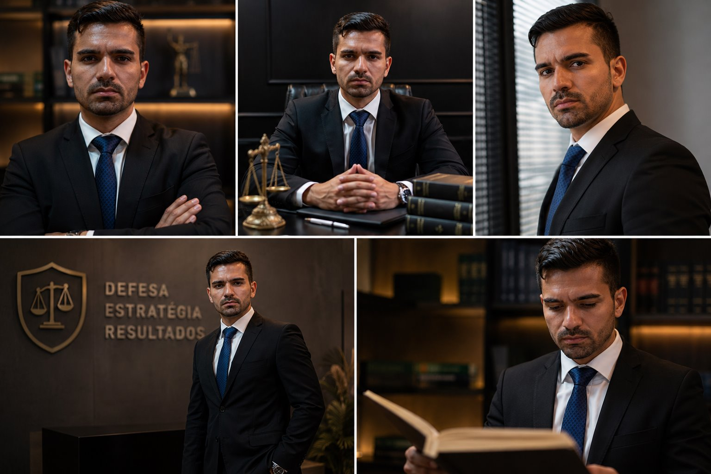

L
Dra. Laura Corrêa★★★★★ · Google
“Como advogado criminalista, o Dr. André é experiente e muito profissional, informando o cliente do que é necessário a ser feito.”
Advocacia criminal particular • São Paulo
Estratégia, discrição e presença quando cada decisão importa. Atendimento jurídico particular, direto com o advogado, em todo o Estado de São Paulo.
Consultas mediante agendamento. As condições da consulta e os honorários são informados antes da contratação.
Proteção técnica e humana
Uma situação criminal pode mudar a rotina de uma família inteira. A resposta precisa unir rapidez, conhecimento técnico e uma comunicação transparente.
O Dr. André Costa Lima atua na defesa de acusados e na assistência jurídica a vítimas, em casos distintos, acompanhando cada etapa com proximidade, sigilo e respeito às garantias individuais.
Agendar consulta com o advogado ↗Avaliações públicas no Google
“Como advogado criminalista, o Dr. André é experiente e muito profissional, informando o cliente do que é necessário a ser feito.”
“Escritório confortável e o atendimento foi rápido. Recomendo.”
Avaliações públicas consultadas no Google. Depoimentos refletem experiências individuais.
Ver avaliações no Google ↗Áreas de atuação
Defesa de acusados e assistência jurídica a vítimas, conforme a situação. Atendimento particular, da consulta à atuação em delegacias e tribunais.
Assistência jurídica a vítimas e defesa de pessoas acusadas, em casos distintos, com sigilo e análise individual de cada situação.
Defesa em acusações de tráfico de drogas, com acompanhamento desde a investigação e o flagrante até o processo criminal.
Atuação na esfera criminal em casos de embriaguez ao volante, atropelamentos e acidentes de trânsito com repercussão criminal.
Atuação imediata, acompanhamento em delegacia e audiência de custódia.
Defesa técnica em primeira e segunda instâncias, com estratégia definida caso a caso.
Medidas para proteção da liberdade e pedidos de revogação de prisão preventiva.
Recursos e acompanhamento perante os tribunais superiores em Brasília.
Defesa em acusações de estelionato, furto, roubo e delitos correlatos.
Defesa em acusações de lavagem de capitais e acompanhamento de casos criminais de repercussão.
Presença e preparo
Atuação técnica com atenção integral aos detalhes que podem mudar o rumo de um caso.

Uma defesa forte começa com escuta, clareza e ação no tempo certo.
Consulta jurídica particular
Agende uma consulta com o Dr. André para análise individual do seu caso. As condições do atendimento e os honorários são apresentados antes da contratação. Atendimento emergencial 24 horas para situações urgentes.